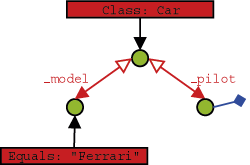

| |
5. Structured objects
It's time to extend our business domain with another class and see how db4o handles object interrelations. Let's give our pilot a vehicle.
namespace Db4odoc.Tutorial.F1.Chapter2
{
public class Car
{
string _model;
Pilot _pilot;
public Car(string model)
{
_model = model;
_pilot = null;
}
public Pilot Pilot
{
get
{
return _pilot;
}
set
{
_pilot = value;
}
}
public string Model
{
get
{
return _model;
}
}
override public string ToString()
{
return string.Format("{0}[{1}]", _model, _pilot);
}
}
}
|
5.1. Storing structured objects
To store a car with its pilot, we just call #Store() on our top level object, the car. The pilot will be stored implicitly.
Of course, we need some competition here. This time we explicitly store the pilot before entering the car - this makes no difference.
5.2. Retrieving structured objects
5.2.1. QBE
To retrieve all cars, we simply provide a 'blank' prototype.
We can also query for all pilots, of course.
Now let's initialize our prototype to specify all cars driven by Rubens Barrichello.
What about retrieving a pilot by car? We simply don't need that - if we already know the car, we can simply access the pilot field directly.
5.2.2. Native Queries
Using native queries with constraints on deep structured objects is straightforward, you can do it just like you would in plain other code.
Let's constrain our query to only those cars driven by a Pilot with a specific name:
public class RetrieveCarsByPilotNamePredicate : Predicate
{
readonly string _pilotName;
public RetrieveCarsByPilotNamePredicate(string pilotName)
{
_pilotName = pilotName;
}
public bool Match(Car candidate)
{
return candidate.Pilot.Name == _pilotName;
}
} |
Using generics syntax this is a lot simpler:
C# Generics
// retrieveCarsByPilotNameNative
string pilotName = "Rubens Barrichello";
List<Car> results = db.Query<Car>(delegate(Car car) {
return car.Pilot.Name == pilotName; });
listResults(results); |
5.2.3. SODA Query API
In order to use SODA for querying for a car given its pilot's name we have to descend two levels into our query.
We can also constrain the pilot field with a prototype to achieve the same result.
We have seen that descending into a query provides us with another query. Starting out from a query root we can descend in multiple directions. In practice this is the same as ascending from one child to a parent and descending to another child. We can conclude that queries turn one-directional references in our objects into true relations. Here is an example that queries for "a Pilot that is being referenced by a Car, where the Car model is 'Ferrari'":

5.3. Updating structured objects
To update structured objects in db4o, we simply call #Store() on them again.
Let's modify the pilot, too.
Nice and easy, isn't it? But wait, there's something evil lurking right behind the corner. Let's see what happens if we split this task in two separate db4o sessions: In the first we modify our pilot and update his car:
And in the second, we'll double-check our modification:
Looks like we're in trouble: Why did the Pilot's points not change? What's happening here and what can we do to fix it?
5.3.1. Update depth
Imagine a complex object with many members that have many members themselves. When updating this object, db4o would have to update all its children, grandchildren, etc. This poses a severe performance penalty and will not be necessary in most cases - sometimes, however, it will.
So, in our previous update example, we were modifying the Pilot child of a Car object. When we saved the change, we told db4o to save our Car object and assumed that the modified Pilot would be updated. But we were modifying and saving in the same manner as we were in the first update sample, so why did it work before? The first time we made the modification, db4o never actually had to retrieve the modified Pilot it returned the same one that was still in memory that we modified, but it never actually updated the database. The fact that we saw the modified value was, in fact, a bug. Restarting the application would show that the value was unchanged.
To be able to handle this dilemma as flexible as possible, db4o introduces the concept of update depth to control how deep an object's member tree will be traversed on update. The default update depth for all objects is 1, meaning that only primitive and String members will be updated, but changes in object members will not be reflected.
db4o provides means to control update depth with very fine granularity. For our current problem we'll advise db4o to update the full graph for Car objects by setting #CascadeOnUpdate() for this class accordingly.
This looks much better.
Note that container configuration must be passed when the container is opened.
We'll cover update depth as well as other issues with complex object graphs and the respective db4o configuration options in more detail in a later chapter.
5.4. Deleting structured objects
As we have already seen, we call #Delete() on objects to get rid of them.
Fine, the car is gone. What about the pilots?
Ok, this is no real surprise - we don't expect a pilot to vanish when his car is disposed of in real life, too. But what if we want an object's children to be thrown away on deletion, too?
5.4.1. Recursive deletion
You may already suspect that the problem of recursive deletion (and perhaps its solution, too) is quite similar to our little update problem, and you're right. Let's configure db4o to delete a car's pilot, too, when the car is deleted.
Again: Note that configuration should be passed to the call opening ObjectContainer.
Let's have a look at our pilots again.
5.4.2. Recursive deletion revisited
But wait - what happens if the children of a removed object are still referenced by other objects?
Houston, we have a problem - and there's no simple solution at hand. Currently db4o does not check whether objects to be deleted are referenced anywhere else, so please be very careful when using this feature.
Let's clear our database for the next chapter.
5.5. Conclusion
So much for object associations: We can hook into a root object and climb down its reference graph to specify queries. But what about multi-valued objects like arrays and collections? We will cover this in the next chapter .
5.6. Full source
using System;
using System.IO;
using Db4objects.Db4o;
using Db4objects.Db4o.Config;
using Db4objects.Db4o.Query;
namespace Db4odoc.Tutorial.F1.Chapter2
{
public class StructuredExample : Util
{
readonly static string YapFileName = Path.Combine(
Environment.GetFolderPath(Environment.SpecialFolder.LocalApplicationData),
"formula1.yap");
public static void Main(String[] args)
{
File.Delete(YapFileName);
using(IObjectContainer db = Db4oEmbedded.OpenFile(YapFileName))
{
StoreFirstCar(db);
StoreSecondCar(db);
RetrieveAllCarsQBE(db);
RetrieveAllPilotsQBE(db);
RetrieveCarByPilotQBE(db);
RetrieveCarByPilotNameQuery(db);
RetrieveCarByPilotProtoQuery(db);
RetrievePilotByCarModelQuery(db);
UpdateCar(db);
UpdatePilotSingleSession(db);
UpdatePilotSeparateSessionsPart1(db);
}
using(IObjectContainer db = Db4oEmbedded.OpenFile(YapFileName))
{
UpdatePilotSeparateSessionsPart2(db);
}
UpdatePilotSeparateSessionsImprovedPart1();
using(IObjectContainer db = Db4oEmbedded.OpenFile(YapFileName))
{
UpdatePilotSeparateSessionsImprovedPart2(db);
DeleteFlat(db);
}
DeleteDeep();
DeleteDeepRevisited();
}
public static void StoreFirstCar(IObjectContainer db)
{
Car car1 = new Car("Ferrari");
Pilot pilot1 = new Pilot("Michael Schumacher", 100);
car1.Pilot = pilot1;
db.Store(car1);
}
public static void StoreSecondCar(IObjectContainer db)
{
Pilot pilot2 = new Pilot("Rubens Barrichello", 99);
db.Store(pilot2);
Car car2 = new Car("BMW");
car2.Pilot = pilot2;
db.Store(car2);
}
public static void RetrieveAllCarsQBE(IObjectContainer db)
{
Car proto = new Car(null);
IObjectSet result = db.QueryByExample(proto);
ListResult(result);
}
public static void RetrieveAllPilotsQBE(IObjectContainer db)
{
Pilot proto = new Pilot(null, 0);
IObjectSet result = db.QueryByExample(proto);
ListResult(result);
}
public static void RetrieveCarByPilotQBE(IObjectContainer db)
{
Pilot pilotproto = new Pilot("Rubens Barrichello", 0);
Car carproto = new Car(null);
carproto.Pilot = pilotproto;
IObjectSet result = db.QueryByExample(carproto);
ListResult(result);
}
public static void RetrieveCarByPilotNameQuery(IObjectContainer db)
{
IQuery query = db.Query();
query.Constrain(typeof(Car));
query.Descend("_pilot").Descend("_name")
.Constrain("Rubens Barrichello");
IObjectSet result = query.Execute();
ListResult(result);
}
public static void RetrieveCarByPilotProtoQuery(IObjectContainer db)
{
IQuery query = db.Query();
query.Constrain(typeof(Car));
Pilot proto = new Pilot("Rubens Barrichello", 0);
query.Descend("_pilot").Constrain(proto);
IObjectSet result = query.Execute();
ListResult(result);
}
public static void RetrievePilotByCarModelQuery(IObjectContainer db)
{
IQuery carQuery = db.Query();
carQuery.Constrain(typeof(Car));
carQuery.Descend("_model").Constrain("Ferrari");
IQuery pilotQuery = carQuery.Descend("_pilot");
IObjectSet result = pilotQuery.Execute();
ListResult(result);
}
public static void RetrieveAllPilots(IObjectContainer db)
{
IObjectSet results = db.QueryByExample(typeof(Pilot));
ListResult(results);
}
public static void RetrieveAllCars(IObjectContainer db)
{
IObjectSet results = db.QueryByExample(typeof(Car));
ListResult(results);
}
public class RetrieveCarsByPilotNamePredicate : Predicate
{
readonly string _pilotName;
public RetrieveCarsByPilotNamePredicate(string pilotName)
{
_pilotName = pilotName;
}
public bool Match(Car candidate)
{
return candidate.Pilot.Name == _pilotName;
}
}
public static void RetrieveCarsByPilotNameNative(IObjectContainer db)
{
string pilotName = "Rubens Barrichello";
IObjectSet results = db.Query(new RetrieveCarsByPilotNamePredicate(pilotName));
ListResult(results);
}
public static void UpdateCar(IObjectContainer db)
{
IObjectSet result = db.QueryByExample(new Car("Ferrari"));
Car found = (Car)result.Next();
found.Pilot = new Pilot("Somebody else", 0);
db.Store(found);
result = db.QueryByExample(new Car("Ferrari"));
ListResult(result);
}
public static void UpdatePilotSingleSession(IObjectContainer db)
{
IObjectSet result = db.QueryByExample(new Car("Ferrari"));
Car found = (Car)result.Next();
found.Pilot.AddPoints(1);
db.Store(found);
result = db.QueryByExample(new Car("Ferrari"));
ListResult(result);
}
public static void UpdatePilotSeparateSessionsPart1(IObjectContainer db)
{
IObjectSet result = db.QueryByExample(new Car("Ferrari"));
Car found = (Car)result.Next();
found.Pilot.AddPoints(1);
db.Store(found);
}
public static void UpdatePilotSeparateSessionsPart2(IObjectContainer db)
{
IObjectSet result = db.QueryByExample(new Car("Ferrari"));
ListResult(result);
}
public static void UpdatePilotSeparateSessionsImprovedPart1()
{
IEmbeddedConfiguration config = Db4oEmbedded.NewConfiguration();
config.Common.ObjectClass(typeof(Car)).CascadeOnUpdate(true);
using(IObjectContainer db = Db4oEmbedded.OpenFile(config, YapFileName))
{
IObjectSet result = db.QueryByExample(new Car("Ferrari"));
Car found = (Car)result.Next();
found.Pilot.AddPoints(1);
db.Store(found);
}
}
public static void UpdatePilotSeparateSessionsImprovedPart2(IObjectContainer db)
{
IObjectSet result = db.QueryByExample(new Car("Ferrari"));
ListResult(result);
}
public static void DeleteFlat(IObjectContainer db)
{
IObjectSet result = db.QueryByExample(new Car("Ferrari"));
Car found = (Car)result.Next();
db.Delete(found);
result = db.QueryByExample(new Car(null));
ListResult(result);
}
public static void DeleteDeep()
{
IEmbeddedConfiguration config = Db4oEmbedded.NewConfiguration();
config.Common.ObjectClass(typeof(Car)).CascadeOnDelete(true);
using(IObjectContainer db = Db4oEmbedded.OpenFile(config, YapFileName)){
IObjectSet result = db.QueryByExample(new Car("BMW"));
Car found = (Car)result.Next();
db.Delete(found);
result = db.QueryByExample(new Car(null));
ListResult(result);
}
}
public static void DeleteDeepRevisited()
{
IEmbeddedConfiguration config = Db4oEmbedded.NewConfiguration();
config.Common.ObjectClass(typeof(Car)).CascadeOnDelete(true);
using(IObjectContainer db = Db4oEmbedded.OpenFile(config, YapFileName))
{
IObjectSet result = db.QueryByExample(new Pilot("Michael Schumacher", 0));
Pilot pilot = (Pilot)result.Next();
Car car1 = new Car("Ferrari");
Car car2 = new Car("BMW");
car1.Pilot = pilot;
car2.Pilot = pilot;
db.Store(car1);
db.Store(car2);
db.Delete(car2);
result = db.QueryByExample(new Car(null));
ListResult(result);
}
}
}
}
|
|